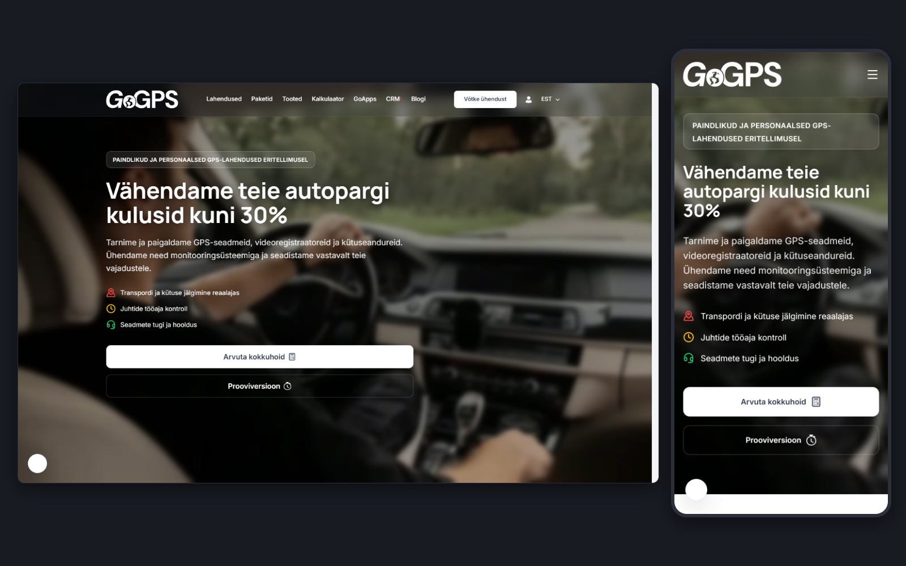

Где я проходил практику
GoGPS · gogps.ee
Компания по GPS-трекингу транспорта и техники.

Скриншот главной gogps.ee(img/gogps_home.png)
ADViral Agency · adviral.agency
Маркетинговое агентство: видео, реклама, соцсети.
 Скриншот главной adviral.agency
Скриншот главной adviral.agency(img/adviral_home.png)
Моя роль: делал всё сам — дизайн, фронтенд, бэкенд, SEO, деплой, аналитика.